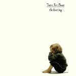

Music Reviews
-
Fort Romeau Stay / True
Fort Romeau, aka Mike Norris, crafts highly addicting House music. What does it say about how we dream and how we use language?
Michael Iovino reviews... -
Monogamy Party False Dancers
With False Dancers, Seattle-based Monogamy Party crafts noise rock for malcontents. Go, angst!
Sean Caldwell reviews... -

MGMT MGMT
The New York City duo is once again at odds with their audience on their soon-to-be-polarizing third effort, willingly distancing itself even further from the pop constraints they dutifully fend against.
Juan Edgardo Rodríguez is living a lie... -
Blouse Imperium
Following the synth pop bliss of their 2011 debut, Portland band Blouse follows with the more guitar-oriented Imperium, growing musically while remaining devoted to their Nü Wave roots.
Sean Caldwell is one of us... -

Tears for Fears The Hurting
He finds it kind of funny, he finds it kind of sad, but D.C. Harrison is two years older than Tears for Fears' debut album, now reissued in grand style.
Read more... -
Vista Chino Peace
Peace is the new record from Ky- I mean Vista Chino. It's a second coming that's been 3 years in the making and held up by a lawsuit, but the sunbaked, desert fuzz is still infused with all of the bass-driven riffage and jazzy swings as it always was. Bravo.
Carl Purvis is getting Welcome To Sky Valley out again... -

Janelle Monáe The Electric Lady
Can Janelle Monáe's second album come close to the dizzying heights of 2010's The ArchAndroid?
David Coleman heads back to Metropolis... -

Crystal Stilts Nature Noir
Brooklyn post-punk quintet return with their third studio effort, a psychedelic trip through a field of hazy, 'shoegaze meets garage rock’ soundscapes.
Graeme Marsh reviews... -
Goldfrapp Tales Of Us
Goldfrapp replace the butterfly-wing color palette of Head First with a moody film noir esthetic on Tales Of Us, and the music follows suit, proving yet again that they have nothing to prove.
Luiza Lodder has some new additions to her torch songs playlist... -
Willis Earl Beal Nobody knows.
On his sophomore LP, freak-blues singer Willis Earl Beal finally brings his powerful voice and oddball sensibilities into the studio for a fuller, more professional sound. But don't think that Beal's music has gotten any friendlier in the process.
Peter Quinton tries to sing along to Willis Earl Beal's soulful new record...and fails miserably